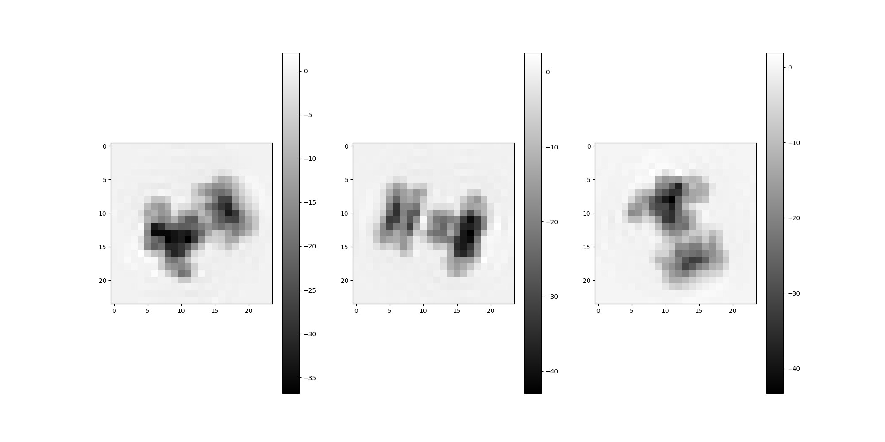
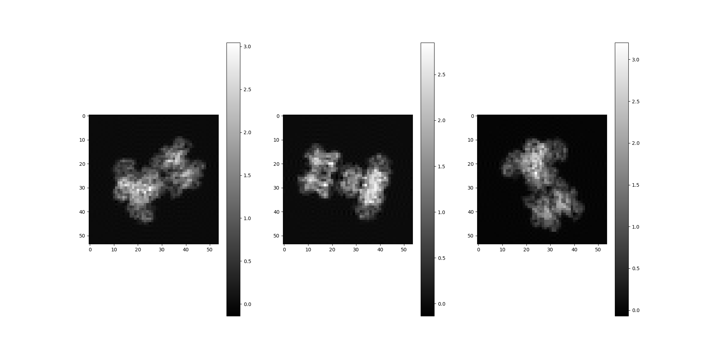

Note
Go to the end to download the full example code.
Weighted Volume Reconstruction¶
This tutorial demonstrates a weighted volume reconstruction, using a published reference dataset.
Download an Example Dataset¶
ASPIRE’s downloader will download, cache, and unpack the reference dataset. More information about the dataset can be found on Zenodo and in this paper
from aspire import downloader
sim_data = downloader.simulated_channelspin()
# This data contains a `Volume` stack, an `Image` stack, weights and
# corresponding parameters that were used to derive images
# from the volumes. For example, the rotations below are the known
# true simulation projection rotations. In practice these would be
# derived from an orientation estimation component.
imgs = sim_data["images"] # Simulated image stack (`Image` object)
rots = sim_data["rots"] # True projection rotations (`Rotation` object)
weights = sim_data["weights"] # Volume weights (`Numpy` array)
vols = sim_data["vols"] # True reference volumes (`Volume` object)
Create a ImageSource¶
The image stack and projection rotation (Euler) angles can be
associated together during instantiation of an ImageSource.
Because this example starts with a dense array of images,
an ArrayImageSource is used.
from aspire.source import ArrayImageSource
src = ArrayImageSource(imgs, angles=rots.angles)
# The images are downsampled for the sake of a quicker tutorial.
# This line can be commented out to achieve the reference size (54 pixels).
src = src.downsample(24)
Note
This tutorial demonstrates bringing reference data.
It is also possible to just create a Simulation or use other
ImageSource objects, so long as the rotations required
for backprojecting are assigned.
Volume Reconstruction¶
Performing a weighted volume reconstruction requires defining an appropriate 3D basis and supplying an associated image to volume weight mapping as an array.
from aspire.basis import FFBBasis3D
from aspire.reconstruction import WeightedVolumesEstimator
# Create a reasonable Basis
basis = FFBBasis3D(src.L, dtype=src.dtype)
# Set up an estimator to perform the backprojections and volume estimation.
# In this case, the `weights` array comes from the reference data set,
# and is shaped to map images to spectral volumes.
# Note that we can have many more actual/reference volumes generating
# the image stack than spectral volumes. In this case the input
# images were generated from 54 volumes, but are described by 16
# spectral volumes.
print("`weights shape:`", weights.shape)
estimator = WeightedVolumesEstimator(weights, src, basis, preconditioner="none")
# Perform the estimation, returning a `Volume` stack.
estimated_volume = estimator.estimate()
`weights shape:` (10000, 16)
Note
The estimate() method requires a fair amount of compute time,
but there should be regularly logged progress towards convergence.
Comparison of Estimated Volume with Source Volume¶
Generate several random projections rotations, then compare these
projections between the estimated spectral volumes and a known volume.
If src was downsampled above, the resulting estimated volumes
and projections will be of similar downsampled quality.
Note that the estimated spectral volumes are treated as Volume objects purely for convienience and are not expected to correspond exactly to any particular reference volume. The spectral volumes collectively describe motion features derived from the input data. However, basic visual comparison is useful as a sanity check to demonstrate that we are in fact generating spectral volumes that appear reasonably similar to the input volumes.
from aspire.utils import Rotation
reference_v = 0 # Actual volume under comparison
spectral_v = 0 # Estimated spectral volume
m = 3 # Number of projections
random_rotations = Rotation.generate_random_rotations(m, dtype=src.dtype)
# Estimated volume projections
estimated_volume[spectral_v].project(random_rotations).show()
# Source volume projections
vols[reference_v].project(random_rotations).show()
- 
- 
Total running time of the script: (9 minutes 21.155 seconds)